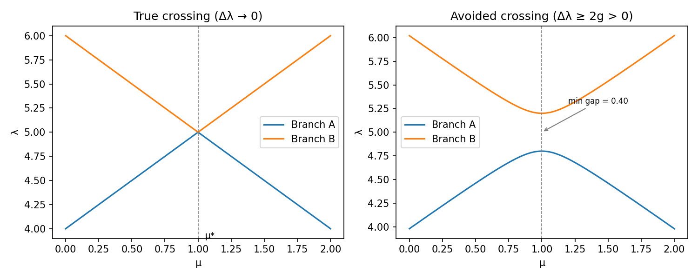
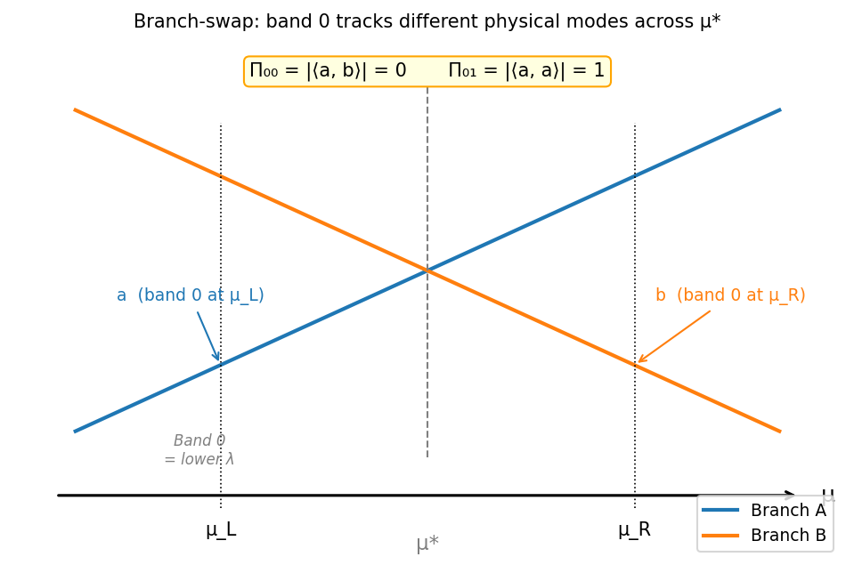
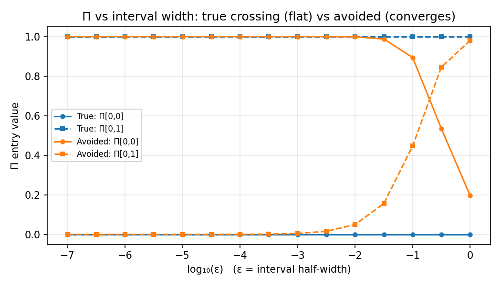
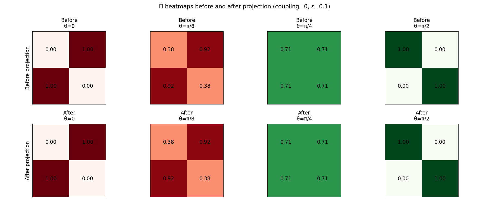

Persistent Π Failures at Eigenvalue Crossings
1. The phenomenon
Some edges in the adaptive grid flag REFINE indefinitely — no amount of bisection removes the ambiguous block. This page traces the exact mechanism and the algorithmic fix.
The a posteriori Π matrix is the greedy algorithm’s certification signal. A well-resolved subinterval produces a diagonally-dominant Π; one whose columns are ambiguously mixed flags REFINE. At a true eigenvalue crossing, Π is persistently off-diagonal at every refinement level. This is not a solver artifact — it is a topological property of the eigenvalue surface, and understanding it explains exactly why the Projection Algorithm is needed and what it does.
2. The a posteriori Π matrix
Given a subinterval [\mu_L, \mu_R], the greedy algorithm solves the parametric eigenproblem A(\mu)u = \lambda B(\mu)u at the two endpoints and computes the a posteriori matrix
\Pi_{j\ell} = \bigl|\langle v_j(\mu_L),\, v_\ell(\mu_R)\rangle_{\bar M}\bigr|,
where \bar M = B(\bar\mu) is the mass matrix at the subinterval midpoint \bar\mu = (\mu_L + \mu_R)/2, and v_j(\mu) denotes the j-th eigenvector (sorted by ascending eigenvalue).
Certification. An edge is certified when each row of Π has a clearly dominant diagonal entry — meaning the j-th eigenvector at the left endpoint is well-matched to the j-th eigenvector at the right endpoint. An ambiguous row signals that the eigenvectors have mixed across the two endpoints.
Example — certified Π (3×3):
| v_1(\mu_R) | v_2(\mu_R) | v_3(\mu_R) | |
|---|---|---|---|
| v_1(\mu_L) | 0.98 | 0.07 | 0.02 |
| v_2(\mu_L) | 0.06 | 0.97 | 0.04 |
| v_3(\mu_L) | 0.01 | 0.03 | 0.99 |
Example — ambiguous Π (2×2) at a true crossing:
| v_1(\mu_R) | v_2(\mu_R) | |
|---|---|---|
| v_1(\mu_L) | 0.00 | 1.00 |
| v_2(\mu_L) | 1.00 | 0.00 |
The second matrix is a permutation: band 0 at the left maps onto band 1 at the right, and vice versa. This pattern recurs whenever a true eigenvalue crossing lies inside the subinterval.
3. True vs avoided crossing
Two distinct geometric configurations produce heavy off-diagonal Π entries — and they require fundamentally different resolution strategies.

True crossing. Two eigenvalue branches exchange identity at \mu^*: the lower branch to the left of \mu^* continues as the upper branch to the right, and vice versa. The gap \Delta\lambda(\mu^*) = 0 exactly (for symmetry-protected degeneracies) or approaches zero as a power of mesh resolution (for finite-element discretisations).
Avoided crossing. The branches repel; the gap \Delta\lambda \geq 2g > 0 everywhere, where g is the coupling strength. The eigenvectors mix — the closer the interval straddles the avoided crossing minimum, the stronger the mixing.
The algorithm sees both types through the same Π block. But the two cases diverge sharply in how they respond to refinement.
4. The branch-swap at a true crossing
At a true crossing at \mu^*, eigenvalue-ordering assigns “band 0” to the lower eigenvalue everywhere. This convention forces band 0 to track different physical modes on opposite sides of \mu^*.
Let the two physical modes be branch A and branch B. For any \mu_L < \mu^* < \mu_R:
- Band 0 at \mu_L → eigenvector a (branch A),
- Band 0 at \mu_R → eigenvector b (branch B).
Since A and B are distinct modes of the same operator, \langle a, b \rangle_M = 0, so
\Pi_{00} = |\langle a, b \rangle_M| = 0, \qquad \Pi_{01} = |\langle a, a \rangle_M| = 1.
The Π matrix is [0, 1; 1, 0] — an exact permutation — and this holds for any subinterval whose interior contains \mu^*.

The key observation: this is not a statement about a particular interval width. Any [\mu_L, \mu_R] with \mu^* \in (\mu_L, \mu_R) has band 0 on opposite branches at its two endpoints. Bisection never changes this; it only moves \mu_L and \mu_R closer to \mu^*, never past it.
5. Why refinement doesn’t help
For a true crossing, Π is structurally [0,1;1,0] at every scale. The table below shows Π for a synthetic two-level problem with an exact crossing at \mu^* = 1, computed at interval half-widths \varepsilon from 1 down to 10^{-7}:
| \varepsilon | Π[0,0] | Π[0,1] | Π[1,0] | Π[1,1] |
|---|---|---|---|---|
| 1.0 \times 10^{0} | 0.0000 | 1.0000 | 1.0000 | 0.0000 |
| 1.0 \times 10^{-1} | 0.0000 | 1.0000 | 1.0000 | 0.0000 |
| 1.0 \times 10^{-2} | 0.0000 | 1.0000 | 1.0000 | 0.0000 |
| 1.0 \times 10^{-3} | 0.0000 | 1.0000 | 1.0000 | 0.0000 |
| 1.0 \times 10^{-4} | 0.0000 | 1.0000 | 1.0000 | 0.0000 |
| 1.0 \times 10^{-5} | 0.0000 | 1.0000 | 1.0000 | 0.0000 |
| 1.0 \times 10^{-6} | 0.0000 | 1.0000 | 1.0000 | 0.0000 |
| 1.0 \times 10^{-7} | 0.0000 | 1.0000 | 1.0000 | 0.0000 |
The figure below contrasts this with an avoided crossing of the same model with coupling g = 0.2:

For the true crossing, both Π[0,0] and Π[0,1] are constant across seven decades of \varepsilon. For the avoided crossing, Π[0,0] rises toward 1 and Π[0,1] falls toward 0 as the interval shrinks — certification eventually occurs. The difference is not a matter of degree; it is structural.
6. Avoided crossings do improve with refinement
At an avoided crossing, the two physical branches do not exchange identity. The mode mixing is captured by a rotation angle \alpha(\mu) in the two-dimensional subspace. As the subinterval [\mu_L, \mu_R] shrinks away from the avoided crossing minimum, \alpha(\mu_L) - \alpha(\mu_R) \to 0, and \Pi \to I.
The rate of convergence depends on how tight the crossing is: a small minimum gap 2g means the coupling is strong and the mixing angle varies rapidly near \mu^*, so more levels of refinement are needed before the block clears. But the block does clear — the algorithm terminates.
The strategy for avoided crossings is therefore the one the greedy algorithm already implements: keep refining until the interval is narrow enough that the mode mixing is negligible.
7. The FE reality
In a finite-element discretisation, a continuum true crossing becomes a small-but-finite avoided crossing. The FE gap at the would-be crossing scales as O(h^2) (where h is the mesh size) — it approaches zero as the spatial mesh refines, but at any fixed mesh there is a nonzero floor.
The symmetry-diffusion family studied in Classifying Eigenvalue-Crossing Types (symmetry_diffusion_coefficient(eps=0)) illustrates this explicitly: the FE gap at \mu \approx 1 is inversely proportional to the number of mesh elements. A fine spatial mesh makes the problem behave more like a true crossing; a coarse mesh makes it behave like an avoided one with a moderate gap.
The practical consequence: for problems with near-true crossings in the FE sense, the greedy algorithm will keep refining until the parameter grid point \mu_h falls within t_\lambda \cdot \lambda of the crossing in eigenvalue distance, at which point the cluster criterion fires and projection takes over.
8. The Projection Algorithm
When a parameter-space node \mu_h satisfies the cluster criterion — |\lambda_i(\mu_h) - \lambda_j(\mu_h)| / \min < t_\lambda — the algorithm applies projection to resolve the branch-labelling conflict:
- Identify the degenerate subspace. The cluster at \mu_h spans the eigenvectors \{v_i(\mu_h)\} for all bands within t_\lambda of the crossing.
- Project onto the neighbor’s convention. For each eigenvector v_i(\mu_h), compute its M-orthogonal projection onto the span of the neighbor’s snapshot: v_i' = P_{\operatorname{span}(V_\text{neighbor})}(v_i(\mu_h)).
- Renormalize. The projected vectors are re-orthonormalized within the degenerate subspace.
- Certification follows. After projection, v_i' at \mu_h is aligned with the same physical mode as the neighbor’s band i. Both adjacent subintervals (sharing \mu_h) now certify.
The heatmaps below show Π before and after projection for four different rotation gauges \theta \in \{0, \pi/8, \pi/4, \pi/2\} at the degenerate point (where the four columns span all possible starting alignments of the degenerate basis):

Without projection (top row), Π is correct only when \theta = 0 (the solver happens to pick the same gauge as the neighbor); every other rotation produces an ambiguous or inverted block. After projection (bottom row), Π is the identity regardless of the initial gauge.
The projection is the coordinate-free resolution of the branch-labelling conflict. Rather than asking “which branch label does the eigensolver assign at \mu_h?”, it asks “which direction in the degenerate eigenspace is most consistent with the neighbor’s convention?” The answer does not depend on the solver’s arbitrary choice of basis within the degenerate subspace.
9. The gauge story
Experiment A2 in the cluster analysis establishes that ARPACK gives consistent eigenvectors at a true crossing: running the solver eight times with independent random starting vectors, the standard deviation of \Pi_{jl} across runs is zero. The block is not stochastic.
This matters for understanding what projection corrects. The failure is structural, not random: the solver picks a particular branch convention at \mu_h, and that convention happens to be incompatible with the neighbor (because the two parameter points sit on opposite sides of \mu^*). The same consistent-but-wrong convention is used on every visit to \mu_h, so the block appears every time — and projection on every visit also gives the same result. This is why permanent projection (storing the projected vectors) and transient projection (re-projecting at test time) are equivalent: the block is structurally caused and structurally cured.
10. Complete picture
| Crossing type | Source | Improves with refinement? | Projection needed? |
|---|---|---|---|
| True crossing, interior | Branch swap (topological) | Never | Yes (when cluster fires) |
| True crossing, endpoint | Near-degenerate basis | N/A | Yes — designed fix |
| Avoided crossing | Mode mixing (geometric) | Yes (∝ min-gap) | No |
| FE-lifted true crossing | Structural + approaching topological | Slowly | Yes (when FE gap < t_\lambda \cdot \lambda) |
The interior true-crossing case is the structurally hard one: no amount of parameter refinement removes it, because the branch swap is a global property of the eigenvalue surface. The cluster criterion — detecting near-degeneracy in \lambda at a grid node — is the correct trigger, and projection is the correct fix.